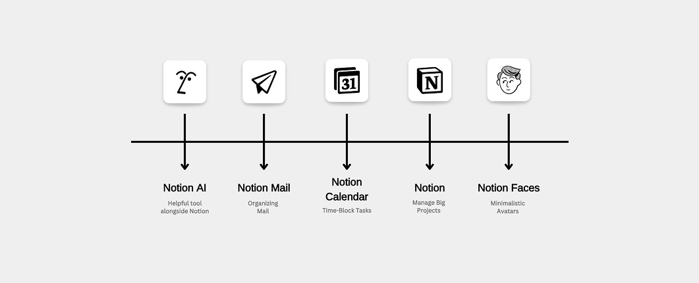
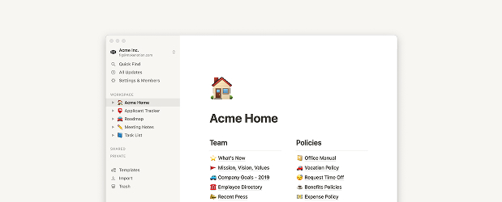
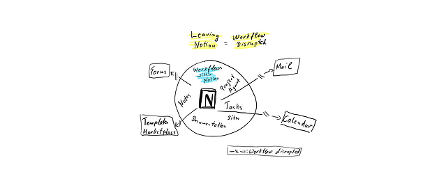
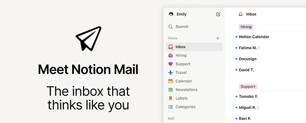
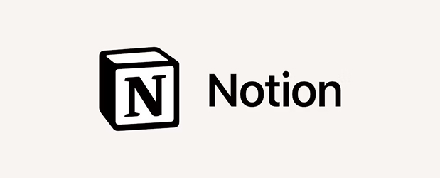

O universo Notion: Como a consistência visual está construindo um império digital.
Imagine entrar em três restaurantes diferentes de uma mesma rede e, mesmo sem ver o nome na fachada, você já saber exatamente onde está. As cadeiras têm o mesmo design, as cores nas paredes seguem o mesmo padrão, até mesmo a disposição dos pratos no cardápio parece familiar. Essa sensação de familiaridade e conforto não é acidental – é o resultado de uma identidade visual meticulosamente planejada. E é exatamente isso que a Notion tem feito no mundo digital com seu ecossistema de produtos.

Quando o Notion foi lançado em 2016, o mundo da produtividade digital era um faroeste de aplicativos desconexos. Tinha-se o Evernote para anotações, o Trello para gerenciar projetos, o Google Docs para documentos colaborativos, e uma infinidade de outras ferramentas que exigiam que você fosse uma espécie de malabarista digital para manter tudo organizado. Era como tentar montar um quebra-cabeça em que cada peça vinha de uma caixa diferente – tecnicamente possível, mas francamente exaustivo.
O Notion chegou com uma proposta ousada: “E se tudo o que você precisa estivesse em um lugar só, com uma interface tão limpa que até sua avó conseguiria usar?” (Ok, talvez eles não tenham dito exatamente isso no pitch inicial, mas dá para captar a essência). Com blocos modulares que se transformavam em qualquer coisa – desde simples notas até bancos de dados complexos – o Notion rapidamente se estabeleceu como o “canivete suíço digital” para indivíduos e equipes.
Expandindo horizontes (e mantendo o design)

À medida que o Notion crescia, seus criadores perceberam algo fundamental: por que reinventar a roda quando já se tem uma rodando perfeitamente? Quando decidiram expandir para além da ferramenta principal, o desafio era criar novos produtos que se sentissem como extensões naturais do ecossistema Notion, não como primos distantes e esquisitos da família.
Em 2023, quando o Notion Calendar (anteriormente conhecido como Cron) foi integrado ao ecossistema, não foi simplesmente a aquisição de um calendário qualquer. Foi uma expansão estratégica que manteve o DNA visual do Notion: a mesma paleta de cores minimalista, a mesma tipografia clara, os mesmos ícones simplificados que nos fazem sentir como se estivéssemos navegando por cômodos diferentes da mesma casa digital. É como se o Calendar fosse aquele irmão mais novo que usa as mesmas roupas do mais velho – não por falta de personalidade, mas porque aquele estilo simplesmente funciona.
Notion Mail: Completando a Tríade da Produtividade

O lançamento mais recente, o Notion Mail, completa o que poderíamos chamar de “Santíssima Trindade da Produtividade”. E, novamente, a consistência visual é impressionante. Se você já está familiarizado com a interface do Notion, usar o Mail é como encontrar um velho amigo vestindo uma roupa nova – você o reconhece instantaneamente.
Essa coerência visual não é apenas uma questão estética; é profundamente funcional. Enquanto grandes empresas como o Google têm cada aplicativo com sua própria personalidade visual (compare o Gmail com o Google Docs, por exemplo, e você verá diferenças significativas), a Notion apostou na consistência como estratégia. É como se eles dissessem: “Ei, você já aprendeu a usar um de nossos produtos? Ótimo, você praticamente já sabe usar todos!”
A psicologia por trás da consistência visual
Para entender por que essa abordagem da Notion é tão eficaz, precisamos fazer uma breve viagem pela psicologia cognitiva. Nossos cérebros adoram padrões. Eles nos ajudam a economizar energia mental – quando reconhecemos algo familiar, não precisamos dedicar recursos cerebrais para aprender tudo do zero.
Quando você abre qualquer produto do ecossistema Notion, seu cérebro imediatamente diz: “Ah, isso eu conheço!” E essa familiaridade instantânea reduz a “fricção cognitiva” – aquela sensação desconfortável de estar perdido ou confuso ao usar uma nova ferramenta. É como chegar em um hotel e descobrir que o layout do quarto é idêntico ao que você estava na semana passada – você sabe exatamente onde está o interruptor da luz, onde guardar suas malas, e como ajustar o chuveiro sem ter que decifrar um painel de controle alienígena.
A Identidade Visual como Estratégia de Negócio

O que a Notion está construindo vai além de ferramentas de produtividade – é um ecossistema coeso onde cada elemento reforça os outros. É como a Apple fez com seus produtos: um MacBook, um iPhone e um iPad não parecem produtos diferentes, mas variações de uma mesma visão de design.
Essa estratégia de identidade visual consistente traz benefícios tangíveis para a empresa:
- Menor curva de aprendizado: Usuários migram facilmente entre os produtos.
- Fortalecimento da marca: Cada novo produto reforça o reconhecimento visual da marca Notion.
- Eficiência de desenvolvimento: Reutilização de componentes de design e padrões de interação.
- Retenção de usuários: Uma vez dentro do ecossistema, é mais difícil sair (o famoso “lock-in” que faz você pensar duas vezes antes de abandonar um produto).
Lições para startups e designers.
Se você está desenvolvendo múltiplos produtos ou expandindo seu portfólio, a abordagem da Notion oferece valiosas lições. Criar um “sistema de design” sólido desde o início pode parecer um investimento pesado de tempo e recursos, mas é como construir uma casa com alicerces firmes – parece que está demorando mais no começo, mas evita dores de cabeça infinitas no futuro.
Pense em quantas vezes você já desistiu de usar um app porque a interface parecia ter sido projetada por alguém que nunca usou um computador antes. Ou pior, quando uma empresa lança uma “atualização” que muda completamente a interface, e de repente você se sente como um alienígena tentando decifrar hieróglifos. A Notion evitou essa armadilha ao manter uma linguagem visual consistente entre todos os seus produtos.
Conclusão: A Arte de Crescer Mantendo a Identidade
O caso do ecossistema Notion nos lembra que, no mundo digital tão saturado de opções, a consistência pode ser uma poderosa ferramenta de diferenciação. Como usuários, não queremos ter que reaprender interfaces a cada novo aplicativo que experimentamos. Queremos tecnologia que pareça uma extensão natural do nosso pensamento, não um obstáculo a ele.
A Notion entendeu que sua identidade visual não é apenas um conjunto de cores e formas bonitas – é uma linguagem. E como qualquer boa linguagem, quanto mais consistente e intuitiva ela for, mais facilmente as pessoas a adotarão para expressar suas próprias ideias. No fim das contas, não é isso que todos queremos? Ferramentas que desapareçam no fundo para que nossos pensamentos, projetos e colaborações possam brilhar em primeiro plano?
Da próxima vez que você abrir o Notion, o Notion Calendar ou o Notion Mail, pare um momento para apreciar essa coerência visual. É um lembrete sutil de que, às vezes, a verdadeira inovação não está em reinventar a roda a cada oportunidade, mas em aperfeiçoar uma ideia brilhante até que ela funcione perfeitamente em todos os contextos. Como diria um designer minimalista: “A perfeição não é alcançada quando não há mais nada a adicionar, mas quando não há mais nada a retirar.”